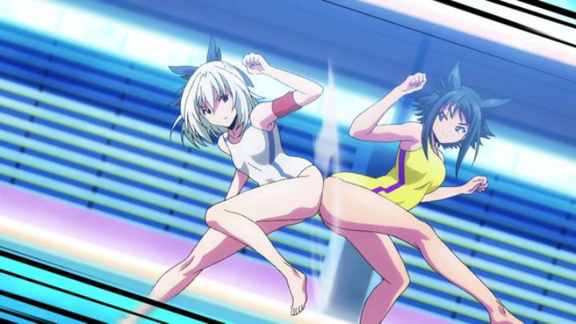

In Japan, there seems to be a known pool game with no particular name, where two people balance on a floating platform in the water and try to knock each other off by pushing them with their butts. Such a game doesn't seem to be commonly played outside of Japan; most Americans would recognize this as being one of the mini-games in the 2006 video-game "Dead or Alive Xtreme 2" and its sequels, which were games that featured a female-only cast with generous bounce physics. The game would appear in other media, including a Final Fantasy spin-off action game on the Wii, of all places. However the game originated, it clearly made its mark in Japanese culture.But what if this game wasn't simply a fun pool event, but a legitimate competitive sport? That's what the 2016 sports anime "Keijo!!!!!!!!" (that's eight exclaimation marks) is about. In a alternate Japan, the female-only sport is sweeping the nation, and young women everywhere dreams of going pro. Over the course of twelve episodes, we follow Nozomi, a head-strong student accepted into one of Japan's few dedicated schools for the sport, working alongside her new friends to train to become the best there is. And as a reminder, this is a sport where girls fight in bikinis trying to knock each other off a floating "land" into the water, using nothing but their butts (or, to make things interesting, their busts). Yes, this show exists.Surprisingly, while sexualized fanservice is still a part of the show, it is really a competitive sports show first and foremost, then comedy, then fanservice material for teenage boys. The characters in the show all take the sport of Keijo seriously, not seeming to question being half-naked in front of a large audience. The story follows the beats of shonen anime normally targeted at ten-year olds: think "Beyblade" or "Pokemon," or even "Naruto." As such, the story is as straightforward as can be, and all of the characters are pretty one dimensional: the main four friends can be classified into archtypes of "head-strong confident," "cool and dedicated," "quiet and strategic," and "clumsy." They celebrate being accepted into a Keijo school, despite being at the lowest rank among the students, and work hard to surpase their limits to the top of the class, and in a tournament against the rival school. The tournaments are stretched out (thankfully, not more than one episode per battle) with plenty of unnecessary exposition from everyone sitting on the sidelines in between attacks. It's a simple story, but like the popular shows that came before it, it is easy to get wrapped up in the competition and cheer on our heroes. And the show becomes doubly-addictive to watch when comedy is involved. The core concept is ridiculous enough to turn heads, but the script runs further with it than you might have thought. What training or classes do you think one would take at a Keijo school? Besides very specific excercises during P.E., there are special classes in history, physics and biology dedicated to understanding butts and fighting strategies. What types of attacks would one pull off in a Keijo battle that lasts a full episode? Imagine all matter of angles and speeds one can use a butt or bust to push an opponent, or clenching to grab an opponent or to pull off their swimsuit. In proper fashion, the fighters yell out their attacks when pulling off a special move: moves like "Shouryu-cans," "Butt-ack on Titan" and "Gate of Booty-lon," defying any manner of realism while playfully referencing dozens of other action anime. You would think this would get old, but I had laugh-out-loud moments multiple times in every episode.  The fanservice aspect is where I admire and also cringe at the show. There is no explicit nudity: even when a character purposely removes their bikini top during a match, it is blocked by the sun's reflection, temporarily blinding the opponent in the show as well. The show virtually has no male characters, removing some of the weird voyeuristic and hormone-driven aspects. These characters feel comfortable with their naughty bits, as they should, given they will have to develop and use them in creative ways to violently attack their opponents. It's as if any sexual tension doesn't exist, allowing us to relaxed to laugh at the natural atatomy of the female body. But it doesn't consistently stay this way: a few female characters are gay, and don't mind toying with some of their friends to make them feel uncomfortable, and will even go so far as to "stimulate" them on the court to knock them out in battle. The characters then feel uncomfortable and embaressed, and so does the viewer. Also, at the beginning of every episode, a man's English voice-over introduces Keijo by explaining it is the hottest new gambling sport, replacing horse racing, and maintaining the description through characters describing their battles as "races." Why objectify the competitors like this instead of comparing them directly to basketball or tennis players? Men were behind the direction of the show and the writing of the manga it was based off of, so it makes sense that a couple missteps would occur, but having women on the production team would have helped push "Keijo" to being an acceptable, and even fun, show for women to watch, rather then something for men to fantasize and laugh at. The production values are slightly higher than your typical action show, really leaning into the battles to animate butts and boobs flying at each other. The designs also stand out thanks to attractive and consistent color palettes throughout the show, and bold black outlines on the characters. Yes, characters are sometimes drawn off-model, and animation is noticeably limited at times with static standing characters in between attacks, but like the comedy, the art is so confident that it feels stronger than the average anime. The voice acting is a strange thing... the writers decided to give its characters redneck accents to convey that some of the characters are from different and poorer areas of Japan, which plays into a couple jokes in the first few episodes. However, it feels more distracting than not, and is unnecessary in the Japanese dub. For the English dub, the actors try to mimic Southern American accents, but for about 95% of the dialogue, completely ignore or forget this in favor of talking normally (at least, normally for a Funimation actor). The normal voice sounds good, but having to sometimes go back to an accent pulls me out. I would have rated the acting lower if not for the unabashed confidence they have in yelling out the crazy attack names. So that basically sums up what "Keijo" is. It is possibly the silliest comedy setup in anime, and it completely owns it. It's that confidence that helps make the show so much fun to watch. And it is VERY fun to watch.
- "Ani" More reviews can be found at : https://2danicritic.github.io/ Previous review: review_Kase-san_and_Morning_Glories Next review: review_Kiki's_Delivery_Service